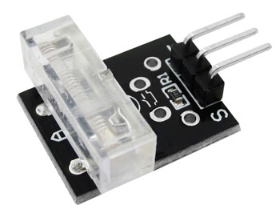
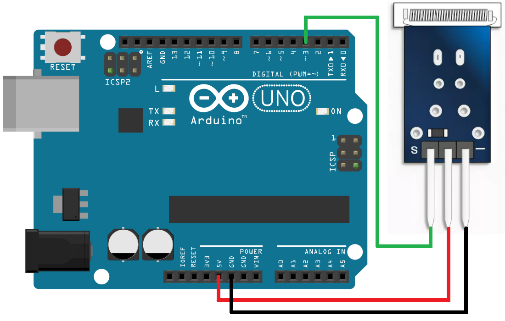

Модуль датчика удара KY-031
Модуль датчика удара KY-031 – датчик позволяющий регистрировать тряску или удары. Представляет собой переключатель, который замыкается при срабатывании. Воздействие воспринимает чувствительный элемент, представляющий собой пружину, конец которой окружён контактами. При ударе пружина изгибается, конец пружины касается контактов и цепь датчика замыкается.
Модуль датчика удара применяется в охранной сигнализации, электронных замках, реагирующих на стук в дверь с определенным ритмом, электронных барабанах.

Между контактами “S” и “+VCC” впаян резистор 10 кОм. В отличии от сенсора вибрации, этот датчик имеет лучше чувствительность если удар происходит перпендикулярно плоскости платы. В других направлениях чувствительность сенсора хуже, из-за особенностей крепления пружинки замыкающейся на контакт при тряске или стуке.

Технические характеристики KY-031:
- Напряжение питания номинальное — 5 В.
- Напряжение питания предельное — 24 В.
- Тип сигнала — цифровой.
- Размеры (мм) — 19,5×16×7,5.
Назначение выводов модуля KY-031 (рис. 1) представлено в таблице 1.
Таблица 1
| Контакт | Назначение |
|---|---|
| S | Сигнальный выход |
| VСС(+) | Напряжение питания |
| GND | Общий минусовой контакт (GND) |
